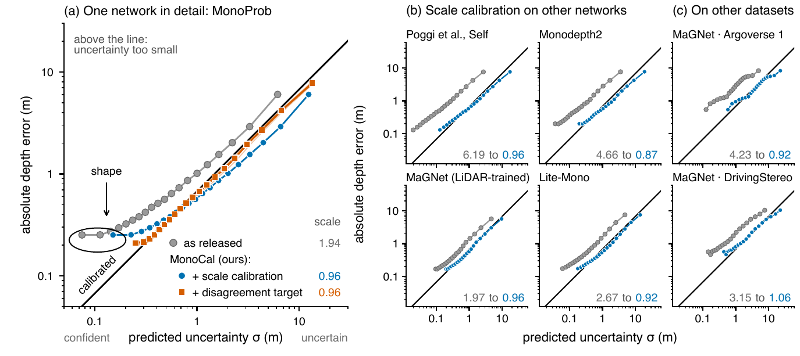
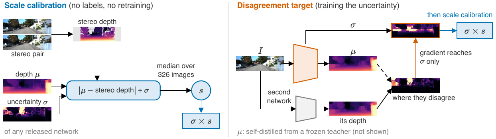
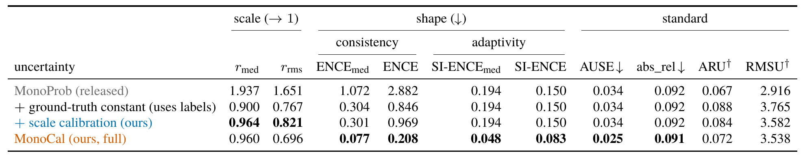
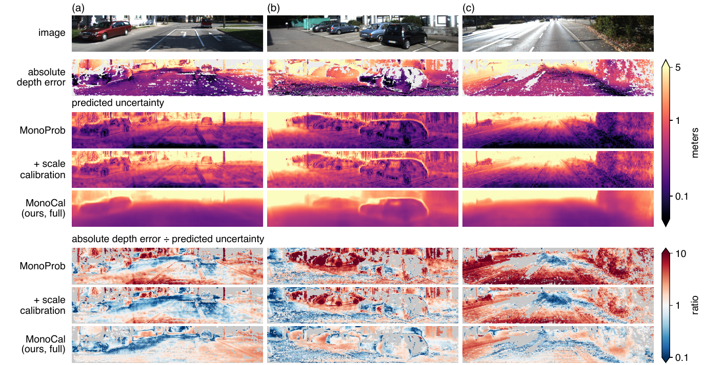
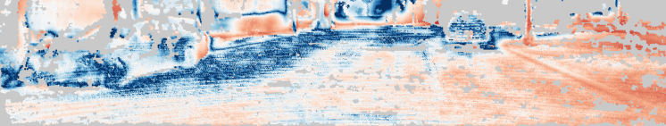
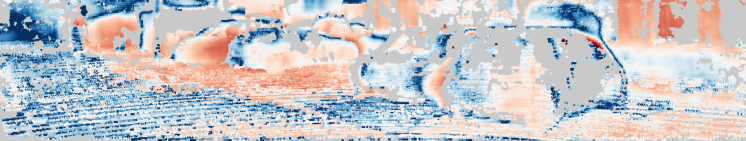
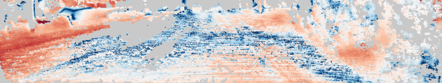
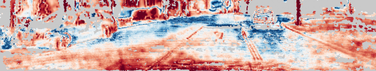
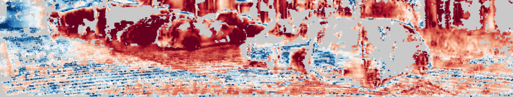
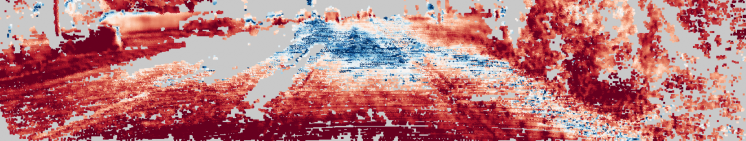

TL;DR: MonoCal corrects both the scale and the shape of the uncertainty of self-supervised monocular depth without ground-truth depth.
Abstract
Self-supervised monocular depth networks can predict a per-pixel uncertainty, which is mainly evaluated by how well it ranks pixels according to their error. Such metrics are insensitive to the magnitude of the uncertainty, so an uncertainty half as large as the actual error obtains the same score. In this paper, we investigate whether the predicted uncertainty is as large as the depth error, both on average (scale) and across confident and uncertain, near and far pixels (shape). On KITTI, the scale is miscalibrated for every uncertainty estimate we evaluate, and the error of MonoProb is nearly twice its predicted uncertainty. We propose MonoCal, which corrects both the scale and the shape without ground-truth depth. Scale calibration multiplies the uncertainty by a single constant measured from stereo pairs, requiring no retraining, and this constant closely matches the one fitted with ground truth. Since a constant cannot change the shape, we further retrain the uncertainty to predict where the depth of the network disagrees with that of a second self-supervised network. Experiments on KITTI show that MonoCal achieves better calibration across uncertainty levels and depth ranges than rescaling with ground truth, while still using a single image at inference. Code will be made publicly available.
Method

Quantitative Results
Scale calibration reduces the rmed of MonoProb from 1.94 to 0.96 without labels or retraining, compared to 0.90 for the ground-truth constant.

Qualitative Results







Drag to compare. Absolute depth error divided by predicted uncertainty on the three test images above. White where the ratio is 1, red where the uncertainty is too small, blue where it is too large.
BibTeX
@article{kim2026monocal,
title = {Calibrating the Uncertainty of Self-Supervised Monocular Depth without Labels},
author = {Kim, Jun Seok and Huang, Rui},
journal = {arXiv preprint arXiv:2611.19188},
year = {2026}
}